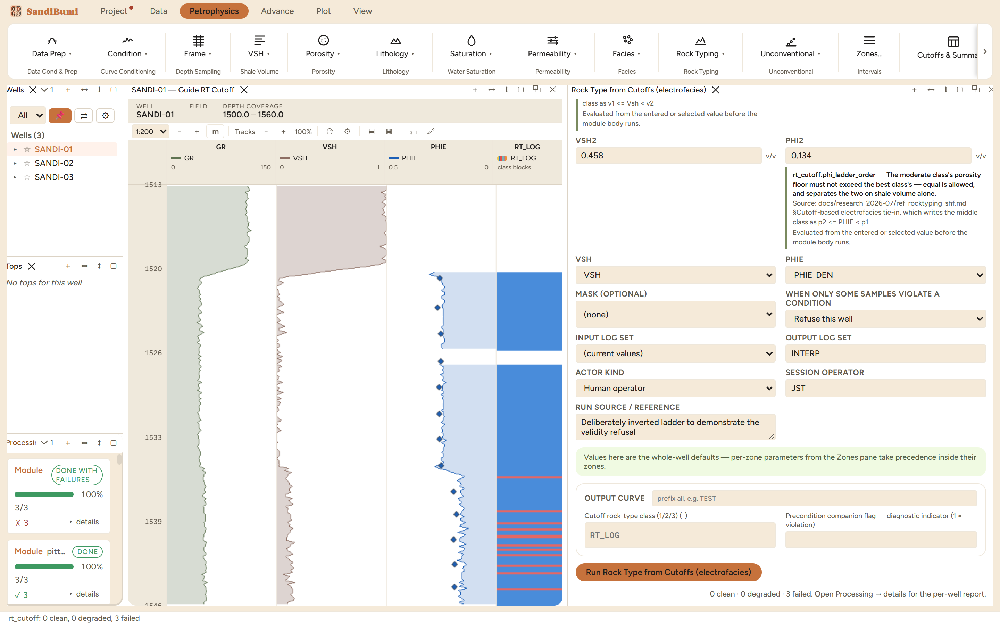
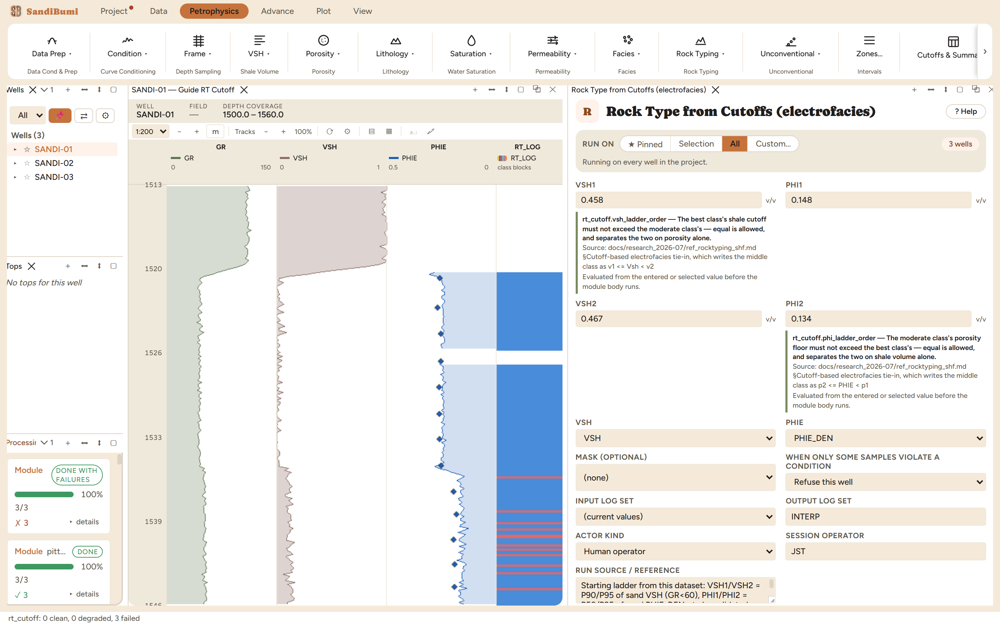
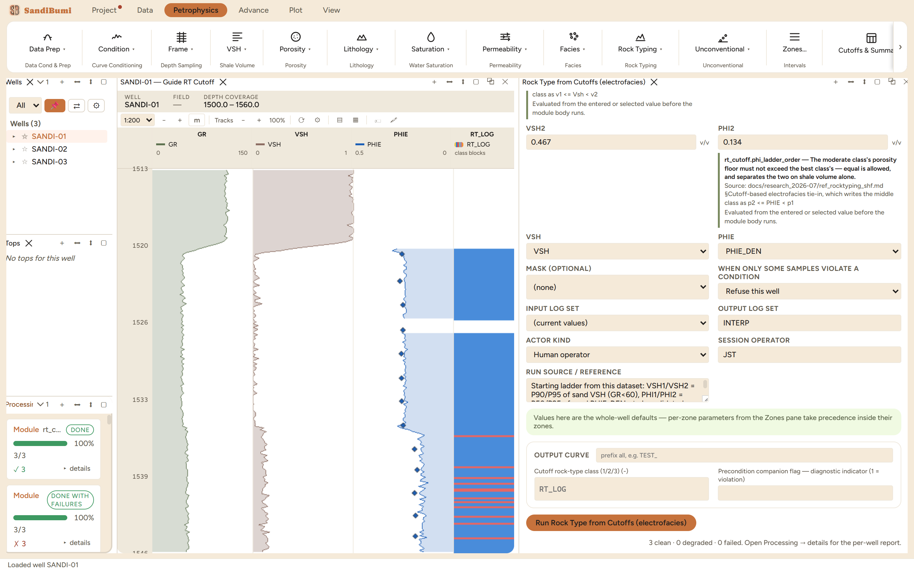

Rock Type from Cutoffs (electrofacies)
9.4 ·rt_cutoffA log-domain rock-type class from a declared Vsh + PHIE cutoff ladder, the electrofacies half of the rock-typing tie-in. Class 1 is the best rock, class 3 is non-net; validate the ladder against a core-derived rock type with the confusion-matrix QC before attaching per-class laws.
RT_LOG = 1 if Vsh ≤ VSH1 and PHIE ≥ PHI1 RT_LOG = 2 if Vsh ≤ VSH2 and PHIE ≥ PHI2 (requires VSH1 ≤ VSH2, PHI1 ≥ PHI2) else RT_LOG = 3
What this is and when to reach for it
A rock-type class from a declared cutoff ladder on Vsh and PHIE: the electrofacies half of the rock-typing tie-in. Where the indicator methods (FZI, R35) compute classes from the porosity-permeability cloud, this one writes the classes you can defend in a review, because every boundary is a number somebody chose and cited.
The physics
RT_LOG = 1 (best: Vsh ≤ VSH1 and PHIE ≥ PHI1)
2 (moderate: Vsh ≤ VSH2 and PHIE ≥ PHI2)
3 (non-net: everything else)
requires VSH1 ≤ VSH2 and PHI1 ≥ PHI2
There is no arithmetic to get wrong, only ordering: the best class must be at least as clean and at least as porous as the moderate class, or the ladder stops meaning better and worse. Samples missing either input stay MISSING.
The refusal comes first
Enter a ladder whose shale cutoffs are inverted (best class allowed more shale than moderate) and the run refuses with the full argument:
precondition 'rt_cutoff.vsh_ladder_order' on 'VSH1' failed before rt_cutoff ran: value 0.467 at sample 0 is above 'VSH2' value 0.458. The best class's shale cutoff must not exceed the moderate class's — equal is allowed, and separates the two on porosity alone.

The picks and why
A starting ladder derived from the section itself, to be validated against core:
- VSH1 0.458, VSH2 0.467: the P90 and P95 of the sand population's VSH (GR < 60).
- PHI1 0.148, PHI2 0.134: the P50 and P25 of the sand population's PHIE_DEN.
Percentiles of the population being classified are a defensible first ladder: they make the class boundaries statements about this section's own distribution, and the custody line says exactly which percentiles.

Step by step
- Read the sand population's Vsh and PHIE percentiles from histograms (or the SQL panel).
- Open Petrophysics ▸ Rock Typing ▸ Rock Type from Cutoffs, enter the ladder with its derivation cited, and press Run.
- Validate: the confusion-matrix QC (Rock Typing ▸ Facies Tie-in) scores RT_LOG against a core-described rock-type curve. This dataset carries no core-described RT, so that step waits for a described core; run it whenever one exists.
Reading the result
3 clean. Run live: RT_LOG census 1: 489 samples, 2: 70, 3: 14. The ladder calls most of the interpreted section best rock, which is what P90-of-sand shale cutoffs promise on a sand-dominated interval.
SELECT a.value::INT rt_log, round(median(b.value), 0)::INT ghe, COUNT(*) FROM computed_curves a JOIN computed_curves b ON a.well_id = b.well_id AND a.depth = b.depth AND b.curve_name = 'RT' WHERE a.curve_name = 'RT_LOG' AND NOT isnan(a.value) AND NOT isnan(b.value) GROUP BY 1 ORDER BY 1
The cross-check that stands in while core waits: against the GHE classes from the indicator method, RT_LOG 1 samples have a median GHE of 6, RT_LOG 2 a median of 5, RT_LOG 3 a median of 4. Two classifications built from different inputs (Vsh and porosity here; porosity and permeability there) rank the rock the same way, which is what a real quality axis looks like from two directions.

QC and pitfalls
- A ladder is a hypothesis until the tie-in scores it against described core. Treat the starting percentiles as provisional and revisit them when the confusion matrix disagrees.
- Equal VSH1 and VSH2 is legal and meaningful: it separates the two classes on porosity alone. Inverted is refused.
- The classes are only as good as the VSH and PHIE beneath them; a changed endpoint upstream reshuffles the census downstream, so re-run the ladder after any endpoint revision.
What the application enforces
Everything below is generated from the same manifest the application builds this module’s pane from — descriptions, defaults, sources, ranges and pre-run checks here are exactly what the running application enforces.
Log-domain rock-type class from a Vsh + PHIE cutoff ladder — the electrofacies half of the rock-typing tie-in. RT_LOG = 1 (best: Vsh ≤ VSH1 and PHIE ≥ PHI1), 2 (moderate: Vsh ≤ VSH2 and PHIE ≥ PHI2), else 3 (non-net). Requires VSH1 ≤ VSH2 and PHI1 ≥ PHI2. Feed the result to the confusion-matrix QC (Rock Typing ▸ Facies Tie-in) to validate it against a core-derived RT curve, then attach per-class phi-k / SHF laws. Samples with missing Vsh or PHIE stay MISSING.
Input curves
| Role | Description | Resolves to | Required | Notes |
|---|---|---|---|---|
| VSH | Shale volume | VSH | yes | accepts quantity kind: VSH |
| PHIE | Effective porosity | PHIE | yes | — |
Parameters
Whole-well defaults; per-zone values from the Zones pane take precedence inside their zones (except where a parameter is marked one-value-per-well).
VSH1 (v/v)
Vsh cutoff for RT1 (best)
- No shipped default. You supply this value, and a run entering it explicitly must also cite the source that covers it.
- Accepted range: 0 to 1 v/v
- Checked before the run:
rt_cutoff.vsh_ladder_order— The best class's shale cutoff must not exceed the moderate class's — equal is allowed, and separates the two on porosity alone.Source: docs/research_2026-07/ref_rocktyping_shf.md §Cutoff-based electrofacies tie-in, which writes the middle class as v1 <= Vsh < v2
PHI1 (v/v)
PHIE cutoff for RT1 (best)
- No shipped default. You supply this value, and a run entering it explicitly must also cite the source that covers it.
- Accepted range: 0 to 1 v/v
VSH2 (v/v)
Vsh cutoff for RT2 (moderate)
- No shipped default. You supply this value, and a run entering it explicitly must also cite the source that covers it.
- Accepted range: 0 to 1 v/v
PHI2 (v/v)
PHIE cutoff for RT2 (moderate)
- No shipped default. You supply this value, and a run entering it explicitly must also cite the source that covers it.
- Accepted range: 0 to 1 v/v
- Checked before the run:
rt_cutoff.phi_ladder_order— The moderate class's porosity floor must not exceed the best class's — equal is allowed, and separates the two on shale volume alone.Source: docs/research_2026-07/ref_rocktyping_shf.md §Cutoff-based electrofacies tie-in, which writes the middle class as p2 <= PHIE < p1
Output curves
| Name | Description |
|---|---|
| RT_LOG | Cutoff rock-type class (1/2/3) |